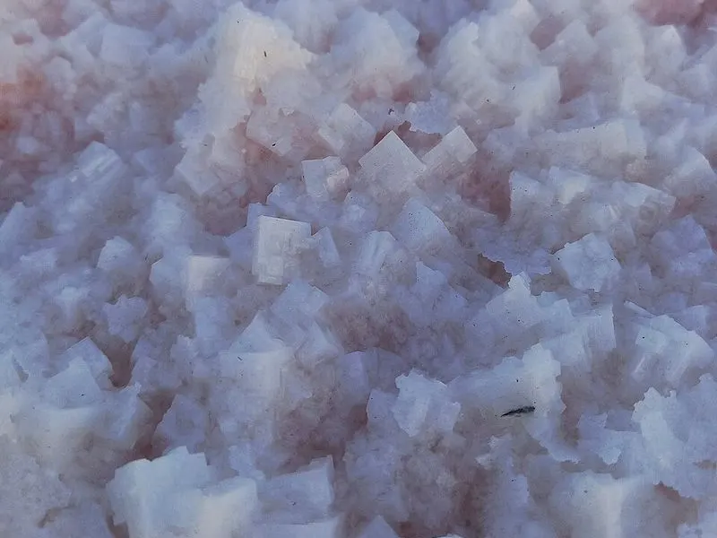
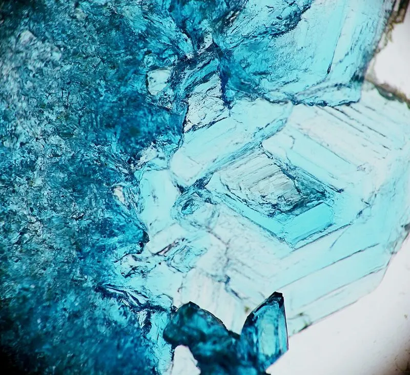

Cambridge Primary Checkpoint · Science 0097 · Stage 6 · Chemistry
Reversible Changes and Dissolving
Learn which physical changes can be reversed and how, what really happens when a solid dissolves, and why solids dissolve faster and more in hot water — explained with the particle model.
British & IGCSE › Checkpoint 6 › Checkpoint 6 Science — Complete Course
- Spot physical changes that can be reversed (undone) and describe how to reverse them, for example melting and freezing, evaporating and condensing, dissolving and evaporating the water away. (6Cc.01)
- Describe how the temperature of a liquid changes how solids dissolve in it, and explain this using the particle model. (6Cc.02)
1. Key words
| Word / phrase | Meaning / use |
|---|---|
| physical change | تغير فيزيائي — no new substance is made; the substance only changes its form, shape or state |
| reversible change | تغير عكسي — a change that can be undone so you get the original substance back |
| irreversible change | تغير غير عكسي — a change that cannot be undone, e.g. burning or cooking |
| dissolve | يذوب — when a solid mixes into a liquid so completely that you cannot see it |
| solute | المذاب — the solid that dissolves (e.g. sugar, salt) |
| solvent | المذيب — the liquid that the solid dissolves in (e.g. water) |
| solution | محلول — the clear mixture of solute and solvent |
| soluble / insoluble | يذوب / لا يذوب — can dissolve / cannot dissolve in that liquid (sand is insoluble in water) |
| saturated solution | محلول مشبع — a solution in which no more solute can dissolve at that temperature |
| particle | جسيم — a tiny piece of a substance; everything is made of particles |
| filtering | الترشيح — separating an insoluble solid from a liquid with filter paper |
| evaporating | التبخير — heating or leaving a solution so the liquid turns to gas and the solid is left |
2. Physical changes and reversible changes
In a physical change no new substance is made. Ice is still water; melted chocolate is still chocolate; salt in water is still salt and water. Because the substance is still there, many physical changes are reversible — we can get the original substance back.
In a chemical change (a chemical reaction) new substances are made, for example when wood burns to ash and smoke. Most chemical changes are irreversible. You will study these on the Chemical Reactions page.
| Change | What happens | How to reverse it |
|---|---|---|
| Melting (ice → water) | solid becomes liquid when heated | cool it until it freezes |
| Freezing (juice → ice lolly) | liquid becomes solid when cooled | warm it until it melts |
| Evaporating / boiling (water → water vapour) | liquid becomes gas | cool the gas so it condenses (e.g. on a cold mirror) |
| Condensing (steam → water drops) | gas becomes liquid when cooled | heat the liquid so it evaporates again |
| Dissolving (salt in water) | solid spreads out in a liquid | evaporate the water; the salt is left behind |
| Mixing sand and water | insoluble solid mixed with liquid | filter: the sand stays in the filter paper |
| Mixing iron filings and sand | two solids mixed | use a magnet to pull out the iron |
Careful: not every physical change is easy to reverse. Tearing paper or crushing a can are physical changes (no new substance), but you cannot easily put them back as they were. In Checkpoint questions, "reversible" means you can get the same substance back again.
Ask two questions: (1) Is a new substance made? If yes → chemical change, usually irreversible. (2) If no new substance is made, can I get the original back by heating, cooling, filtering, evaporating or using a magnet? If yes → reversible physical change.
3. Dissolving
When you stir sugar into water, the sugar seems to disappear. It has not gone — it has dissolved. The sugar is the solute, the water is the solvent and the sweet clear liquid is a solution. You can still taste the sugar, and if you let the water evaporate, the sugar is left behind. This proves dissolving is a reversible change.
- Soluble substances dissolve in water: salt, sugar, instant coffee, washing powder.
- Insoluble substances do not dissolve in water: sand, chalk, flour (it makes a cloudy mixture), pepper.
- A solution is clear (you can see through it), even if it is coloured, like weak tea or blue copper sulfate solution. A cloudy mixture means some solid has not dissolved.
Melting needs only one substance and heat: solid ice → liquid water. Dissolving needs two substances: a solute and a solvent. Sugar in tea dissolves; it does not melt. Writing "the sugar melted" loses the mark.
4. Mass does not change when a solid dissolves
The solute particles are still there, only spread out, so the mass of the solution = mass of solvent + mass of solute. If you dissolve 20 g of salt in 100 g of water, the solution has a mass of 120 g. Nothing is lost.
5. Getting the substances back (reversing)
- Filtering separates an insoluble solid from a liquid. Pour the mixture through filter paper in a funnel. The solid (the residue) stays in the paper; the liquid (the filtrate) passes through.
- Evaporating separates a dissolved solid from its solution. Heat the solution gently in an evaporating basin, or leave it in a warm place. The water becomes water vapour and the solid is left as crystals.
- To collect the water as well, the water vapour must be cooled so it condenses back into a liquid (this is how solar stills make clean water from salty water).
- Filtering cannot separate salt from water — the salt particles are so small that they pass through the filter paper with the water.


6. The particle model of dissolving
Scientists use a model to explain dissolving: everything is made of tiny particles that are always moving. In a liquid the particles touch but slide past each other.
- Water particles are always moving and bump into the surface of the sugar crystal.
- The bumps pull sugar particles away from the crystal one by one.
- The sugar particles spread out and mix between the water particles, so the crystal gets smaller and smaller until it cannot be seen.
- The sugar particles are still there (the mass is the same), just too spread out to see.
7. How temperature affects dissolving
For most solids, a higher temperature of the liquid has two effects:
- The solid dissolves faster (it takes less time to dissolve).
- More solid can dissolve in the same volume of liquid before the solution is saturated.
Particle explanation: when the water is heated, its particles get more energy and move faster. Fast particles hit the solid more often and with more force, so sugar particles are pulled away from the crystal and spread out more quickly. Because the particles are moving faster, there is also room for more sugar particles to spread out among them, so more sugar dissolves before the solution becomes saturated.
Other things also make a solid dissolve faster — stirring and using smaller pieces (powder instead of a cube). In a fair test about temperature, these must be kept the same (control variables).
Reading the graph: as the temperature goes up, the time to dissolve goes down. The curve gets less steep at higher temperatures: going from 20 °C to 30 °C saves 45 s, but going from 50 °C to 60 °C saves only 15 s.
الذوبان تغير فيزيائي عكسي: السكر لا يختفي، بل تتوزع جسيماته بين جسيمات الماء، ونستطيع استرجاعه بتبخير الماء. كلما زادت درجة حرارة الماء تتحرك جسيماته أسرع، فتصطدم بالسكر أكثر وبقوة أكبر، فيذوب أسرع ويذوب منه كمية أكبر. انتبه: السكر "يذوب" (dissolves) ولا "ينصهر" (melts).
8. Worked examples
Worked example 1 — Here are five changes: melting wax, burning wax, dissolving coffee in hot water, freezing orange juice, cooking an egg. Write down the three changes that are reversible. [2 marks]
- Ask for each one: is a new substance made? Burning wax makes new gases (carbon dioxide and water vapour) and cooking an egg changes it into a new substance — both are chemical and irreversible.
- The others make no new substance: melting wax (cool it → solid wax again), dissolving coffee (evaporate the water → coffee left), freezing juice (warm it → liquid juice).
- Answer: melting wax, dissolving coffee, freezing orange juice. (2 marks for all three correct, 1 mark for two correct.)
Worked example 2 — Omar puts 200 g of water in a beaker. He dissolves 25 g of salt in it. (a) What is the mass of the salt solution? [1] (b) Explain your answer. [1]
- (a) mass of solution = mass of water + mass of salt = 200 + 25 = 225 g.
- (b) The salt particles are still there, spread out between the water particles; nothing is lost, so the mass does not change.
- Common mistake: writing 200 g because "the salt disappeared". Dissolved substances still have mass.
Worked example 3 — Laila has a mixture of sand and salt. Describe how she can get dry sand and salt crystals from the mixture. [3 marks]
- Add water and stir — the salt dissolves, the sand does not. (1 mark)
- Filter the mixture — the sand stays in the filter paper (dry it in a warm place). (1 mark)
- Evaporate the water from the salt solution that passed through — salt crystals are left. (1 mark)
- Exam tip: always say what each step separates and where each substance ends up.
Worked example 4 — Use the graph in section 7. (a) How long did the sugar take to dissolve at 40 °C? [1] (b) Describe the pattern. [1] (c) Explain the pattern using the particle model. [2]
- (a) Go up from 40 on the temperature axis to the line, then across: 80 s.
- (b) The higher the temperature, the shorter the time to dissolve (the sugar dissolves faster).
- (c) At a higher temperature the water particles move faster (1); they hit the sugar more often/harder so sugar particles are pulled away and spread out more quickly (1).
- Common mistake: "the sugar particles melt". Particles never melt, and the sugar is dissolving, not melting.
Worked example 5 — Youssef predicts: "More sugar will dissolve in 100 ml of water at 70 °C than at 30 °C." Is his prediction correct? Give a reason. [2 marks]
- Yes, his prediction is correct (1).
- Reason: for most solids, more solute can dissolve in hotter water before the solution is saturated, because the faster-moving particles make room for more sugar particles to spread out among them (1).
- To test it: add sugar one level spoonful at a time, stirring, until no more dissolves; count the spoonfuls at each temperature, using the same volume of water each time.
- Saying a solid "melts" in water — the correct word is dissolves.
- Saying the solute "disappears" or "is lost" — it is still there; the mass of the solution includes it.
- Thinking filtering can remove salt from salt water — filtering only removes insoluble solids. Use evaporation for dissolved solids.
- Mixing up solute (the solid) and solvent (the liquid). Memory trick: the solvent is the liquid that the solute enters.
- Explaining with "the heat melts the sugar" instead of "the particles move faster and hit the solid more often".
- Calling every physical change reversible — torn paper cannot be put back; ask whether you can get the same substance back.
- Sort or tick: which changes are reversible? Look for new substances (burning, cooking, rusting = not reversible).
- Calculate a mass: water + solid = solution. Show the addition, write the unit g.
- Describe how to separate: give the method (filter / evaporate / magnet) AND what happens to each substance.
- Investigation questions: name the variable you change (temperature), the one you measure (time to dissolve or amount dissolved) and two you keep the same (volume of water, mass and type of sugar, size of pieces, amount of stirring).
- Explain with particles: for 2 marks you need two ideas — particles move faster, and so they hit/pull solute particles away more often so it dissolves faster.
- Read graph values carefully: check what one small square is worth before you answer.
Practice
- Reversible physical change = no new substance, and you can get the original back (melting/freezing, evaporating/condensing, dissolving).
- Solute + solvent → solution. Mass of solution = mass of solute + mass of solvent.
- Filter to remove an insoluble solid; evaporate to get back a dissolved solid.
- Hotter liquid → solid dissolves faster and more of it can dissolve.
- Particle reason: hotter particles move faster, hit the solid more often and harder, and pull its particles away more quickly.
- Sugar dissolves — it does not melt.
All pages in this course
Start here
- Checkpoint 6 Science: The Test and How to Prepare
- Thinking and Working Scientifically: Investigations, Variables, Tables and Graphs
Biology
- The Heart and Circulatory System
- The Lungs and Respiratory System
- Human Reproductive System and Puberty
- Diseases, Hygiene and the Body's Defences
- Food Chains, Food Webs, Energy and Toxins
Chemistry
- Properties of Substances: Melting and Boiling Points, Gases, Conductors
- Reversible Changes and Dissolving
- Boiling and Evaporation
- Chemical Reactions: Reactants, Products and Evidence
Physics
- Mass, Weight and Gravity
- Force Diagrams and Forces on Moving Objects
- Floating and Sinking
- Light: Reflection and Refraction
- Electric Circuits, Symbols, Series and Parallel
Earth and space
Practice tests